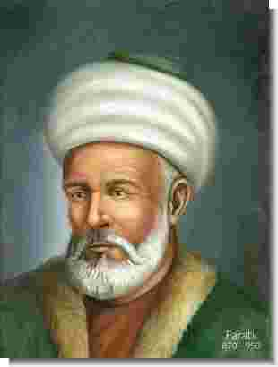

Farabi (871-950)

Büyük Ýslam alimlerindendir. Matematik, botanik, týp, musiki, felsefe ve mantýk alanýnda eserler yazmýþtýr. Felsefe alanýnda uyguladýðý metodla, Ýslam felsefesini temellendiren bilim adamý olarak kabul edilmektedir. Özellikle felsefe dalýnda Aristo ile kýyaslanacak kadar büyük bir þöhrete sahiptir. Risale-i Nur'da, Ýslam hükemasýnýn dahilerinden biri olarak geçmektedir. Asýl adý, Ebu Nasr Muhammed'dir. Künyesi, Ebu Nasr Muhammed bin Muhammed bin Tarhan bin Uzluð el-Farabi þeklindedir.Tahminen 1870 yýlýnda, Türkistan'ýn Farab þehrinde doðmuþtur. Farabi lakabý ile tanýnmasýnýn sebebi doðduðu memleketin isminden ötürüdür. Ailesi hakkýnda fazla bir bilgi mevcut deðildir. Sadece babasýnýn Vesiç kalesi komutaný olduðu bilinmektedir. Yaþadýðý bölge o sýralarda Samanlýlar Devleti'nin hakimiyetindedir ve eðitim dili Arapça, edebiyat dili Farsça'dýr. Bu nedenle hem Arapça'yý hem de Farsça'yý öðrenmiþtir.
Farabi, eðitimini tamamladýktan sonra bir süre kadýlýk yaptý. Daha sonra memleketinden ayrýldý ve uzun süre devam edecek olan ilim maksatlý seyahatlerine baþladý. Yakýn çevreden baþlayarak önce Semerkand, Buhara, Merv ve Belh gibi ünlü þehirleri dolaþtýktan sonra Ýran'a gitti. Burada da zamanýn önemli ilim ve irfan merkezlerini dolaþtý. Daha sonra Baðdat'a gitti. Bütün bu seyahatlerinin de katkýsýyla kendisini çok iyi yetiþtirdi.
Farabi, yirmi yýl gibi uzun bir süre Baðdat'ta kaldý. Bu süre zarfýnda mantýk baþta olmak üzere bir taraftan ders almaya devam etti, diðer taraftan da özellikle çok baþarýlý olduðu dil ve diðer bazý alanlarda dersler verdi. Bu arada bazý hocalardan ders alýrken eski çað kültür ve bilimiyle ilgili önemli inceleme ve araþtýrmalarda bulundu.
Baðdat'ta çýkan karýþýklýklardan sonra buradan ayrýldý. Dýmaþk'a gitti ve buradaki idarecilerden yakýn alaka ve ilgi gördü. Hamdani sarayýnda emir Seyfüddevle tarafýndan aðýrlandý. Bir ara Mýsýr'a gittiyse de kýsa bir süre sonra Dýmaþk'a geri döndü. Seksen yaþlarýnda ve önemli eserler býrakarak 950 yýlýnda vefat etti. Cenazesi, devletin ileri gelenlerinin de katýlýmýyla kaldýrýlarak Babüssaðir denilen yere defnedildi.
Çok yönlü bir alim olan Farabi, bir çok ilim dalýnda önemli çalýþmalarda bulundu. Ýlimlerin tasnifi ve mantýk alanýnda kendine özgü metodlar kullandý. Ýlimleri tasnif ederek tanýmlarýný yaptý, pratik ve teorik açýdan eðitim ve öðretimdeki deðerlerine ayrý ayrý deðindi. Ýlimleri sýrasýyla; dil, mantýk, matematik, fizik ve metafizik, medeni ilimler þeklinde beþ ana baþlýk altýnda tasnif etti. Farabi'nin yaptýðý bu tasnif, Aristo ile Kindî'nin yaptýðý tasniften önemli farklýlýklar arz etmektedir.
Fýkýh ve kelam ilmini medeni ilimler olarak gören ve inceleyen Farabi, bunlarý teorik ve pratik olmak üzere ikiye ayýrdý. Böylece Ýmam Ebu Hanife'nin bu alandaki sistemini devam ettirdi. Ayrýca, ilim ve sanatlarý deðerleri ile orantýlý bir þekilde de tasnife tabi tuttu. Astronomiyi, geometriyi ve dini ilimleri pratikteki yararlarýný göz önünde tutarak derecelendirme yoluna gitti.
En çok ilgilendiði alanlardan birisi mantýk oldu. Bu alanda Kindî ve diðer bazý mantýkçýlarýn çözemeden býraktýklarý, ispat ve kýyas teorileriyle ilgili meseleleri çözüme kavuþturdu. Bu alanýn her bir dalý için ayrý eser kaleme aldý. Üstün baþarýlarýndan ötürü "muallim-i sani" unvanýyla yad edildi. Mantýkta uyguladýðý "tatavvurat" ve "tasdikat" þeklindeki tasnifine, kendisinden sonra gelen Ýslam alimleri baðlý kaldý. Dil ve mantýk arasýnda yakýn benzerlik ve iliþki olduðuna önemle vurgu yaptý.
Farabi'ye göre felsefe, bütün kainatý önümüze seren ve kâinatý kuþatan külli bir ilimdir. Þu halde varlýðýn ilk prensibini ve en son gayesini araþtýran, onun iþleyiþini sebep-sonuç iliþkisi içinde yorumlayan filozofun bilgisi de külli olacaktýr. Bundan dolayý Farabi "filozofun yapmasý gereken þey kendi gücü ölçüsünde Allah'a benzemektir" (Mahmut Kaya, "Fârâbî", TDVÝA, XII. C., s. 148) diyerek, evrensel bilgiye sahip olunabileceðini iddia etti. Ona göre filozofun görevi; önce kendi ahlakýný daha sonra aile ve nihayetinde ülkesinin ahlaki durumunu düzeltip iyileþtirmektir.
Farabi de felsefecilerin düþtüðü bataklýða bulaþtý. Özellikle Tanrýya benzeme konusundaki tez, Ýslam alimlerinin büyük tepkisine sebep oldu. Bediüzzaman, Farabi ve Ýbn Sina gibi Ýslam felsefecilerinin saplandýklarý bataða þöyle iþaret etmektedir: "Eflâtun ve Aristo, Ýbn-i Sînâ ve Farâbî gibi adamlar, 'Ýnsaniyetin gàyetü'l-gàyâtý, 'teþebbüh-ü bilvâcib'dir, yani Vâcibü'l-Vücuda benzemektir' deyip, Firavunâne bir hüküm vermiþler ve enâniyeti kamçýlayýp, þirk derelerinde serbest koþturarak, esbâbperest, sanemperest, tabiatperest, nücumperest gibi çok enva-ý þirk tâifelerine meydan açmýþlar. Ýnsaniyetin esâsýnda münderiç olan acz ve zaaf, fakr ve ihtiyaç, naks ve kusur kapýlarýný kapayýp, ubûdiyetin yolunu seddetmiþler. Tabiata saplanýp, þirkten tamamen çýkamayýp, þükrün geniþ kapýsýný bulamamýþlar." Ýmam-ý Gazali'nin en düþük mümin derecesinde bile görmediði Farabi'yi Risale-i Nur, mümin kabul etmektedir. (Sözler, s. 498)
Fizik alanýnda da önemli çalýþmalara sahip olan Farabi, sesin fiziki izahýný yapan ilk kiþidir. Fizik ilmini; basit veya birleþik, tabii cisimlerin ilkelerini, özelliklerini ve onlarda meydana gelen deðiþimi saðlayan prensipleri araþtýran bilim dalý olarak tarif etti. Deneyler yapmak suretiyle titreþimlerin dalga uzunluðuna göre azalýp çoðaldýðýný ortaya koydu. Musiki aletleri yapýlýrken nelere dikkat edilmesi gerektiðini tespit etti.
Týp alanýnda yaptýðý çalýþma ile saðlýklý bir bedene sahip olmak için nelerin yapýlmasý gerektiðini, hangi bilgilerle donanmak gerektiðini tespit etmeye çalýþtý. Bu gaye doðrultusunda, týp ilmi için gerekli yedi esasý sýraladý. Bu cümleden olarak tüm organlarýn tanýnmasý, hastalýklarýn çeþitlerinin bilinmesi, ilaçlar ile ilgili bilgilere sahip olunmasý vb. hususlar üzerinde durdu.
Psikoloji ilmiyle ilgili yaptýðý çalýþmasý ayrýca büyük bir etki yaptý. Nefsi, basit bir cevher olarak telakki etti. Bunu da nefsin her þeyi maddeden baðýmsýz olarak algýladýðý, bir anda birbirine zýt ve farklý þeyleri algýlayabildiðinden hareketle, maddi olan bir þeyin bu aktiviteyi gerçekleþtiremeyeceði teziyle kanýtlama yoluna gitti.
Farabi, kendisinden sonra gelen birçok Batýlý ve Doðulu ilim adamýný etkiledi. Yazdýðý eserleri ders kitabý olarak uzun süre okutuldu. Yapmýþ olduðu ilimler tasnifi sadece Ýslam alimlerini deðil, çok sayýda Batýlý bilim adamýný da etkiledi.
Eserleri
Eserleri Türkçe, Ýbranice, Latince, Farsça, Ýngilizce, Fransýzca, Ýtalyanca, Ýspanyolca ve Rusça gibi dünya dillerine çevrildi. Yazdýðý eser sayýsý yüz civarýndadýr. En meþhur eserlerinden birisi olan Medinetü'l-Fazýla'da devlet yönetimi ve siyasetle ilgili olarak dikkat çekici bilgilere ulaþmak mümkündür. Bu eserde felsefi doktrinini ortaya koymaktadýr. Bu eserin çok sayýda baskýsý yapýlmýþtýr. Diðer bazý eserleri þunlardýr:
Kitabü'l-Mille, Siyasetü'l-Medeniyye, Ýhsanü'l-Ulum, Tahsilü's-Sa'ade, Fusulü'l-Medeni, Me'ani'l-Akl, Uyunü'l-Mesail, Fusulü'l-Hikem, Ýsbatü'l-Müfarakat, Felsefetü'l-Aristotalis, Fesefetü'l-Eflatun, Kitabü'l-Huruf.